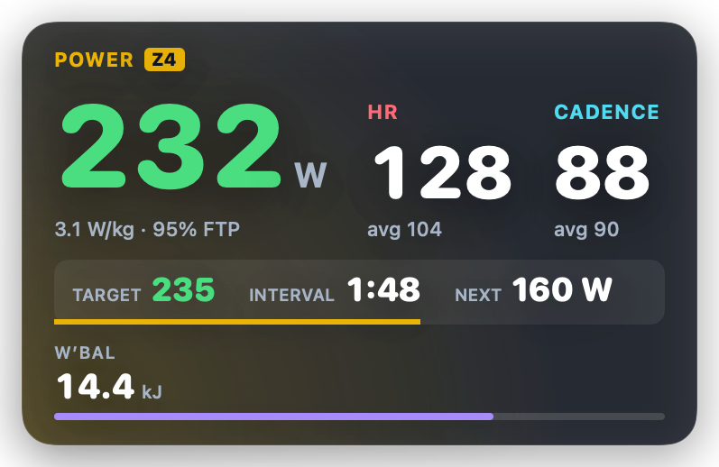

The match, a film or a series, full screen. Your power, heart rate and workout float over it, and your trainer holds the target watts. No game world to stare at: just the thing you wanted to watch anyway.
Free. No account, nothing to install: Chrome or Edge and a smart trainer.

Everything runs in the browser tab; the panel floats over whatever plays on your screen or TV.
Bluetooth, straight from Chrome or Edge: Wahoo, Tacx, Elite, Saris, a power meter, a heart rate strap.
Sweet spot, VO₂max, endurance: almost 30 ready plans, your own .zwo, or what intervals.icu planned for today.
Full screen, any app. The numbers stay on top in a small window, or in Gruppetto HUD, a see-through overlay for Mac.
Other apps are good at what they do. They just don't share the screen.
Its 3D world is the show. Put the match on and the game is behind it, with your numbers.
Looking down every interval, while the match is up there on the TV.
A corner of the match: watts, the interval, what comes next. Glance, keep watching.
The film is for your head; the rest is a proper training session.
Anything on the same computer: YouTube, Netflix, a sports stream, a file. The small window stays on top of other apps and full-screen video. On a TV, keep Gruppetto on the laptop beside you.
Chrome or Edge on Mac, Windows, Linux or Android: they have Web Bluetooth. Safari and Firefox don't.
A tiny free Mac app: a see-through rounded panel over everything, even full-screen video, without the browser's address bar. Optional; the small window works without it.
Yes. No account, no subscription. Your rides stay in your browser until you send them somewhere.